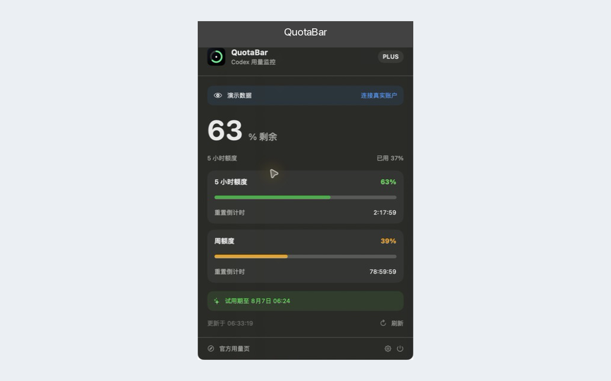

macOS 14+ · Apple 芯片
Codex 用量，
常驻菜单栏。
QuotaBar 实时显示 Codex 剩余百分比、额度窗口和重置倒计时。原生、开源、永久免费。

实时剩余比例
菜单栏随时查看当前 Codex 额度。
菜单栏随时查看当前 Codex 额度。
重置倒计时
同时展示短期和周额度窗口。
同时展示短期和周额度窗口。
本地处理
没有开发者后端、广告或分析 SDK。
没有开发者后端、广告或分析 SDK。
安装
- 从 GitHub Releases 下载 `QuotaBar-v1.0.0-macOS-arm64.zip`。
- 解压后把 QuotaBar 拖入“应用程序”文件夹。
- 首次启动时按住 Control 点击 App，选择“打开”，再确认“打开”。
当前发布包采用临时签名且未经过 Apple 公证，因此首次打开需要额外确认。
开始使用
- 启动 QuotaBar，并通过 Codex 官方流程登录 ChatGPT。
- 点击菜单栏中的 QuotaBar 图标查看额度。
- 使用刷新按钮立即更新，或等待每 60 秒自动刷新。
自愿赞助
QuotaBar 的所有功能永久免费。赞助金额由你决定，不会解锁或限制任何功能。
反馈
Bug、功能建议和使用问题统一提交到 GitHub Issues。请勿上传密码、Cookie 或登录令牌。